Physics Problem Categorization
About
The following report was originally created in Jupyter for a course called Data Science for Psychology and Neuroscience, taken at Carnegie Mellon University in 2022. The analysis includes a brief background, description of data cleaning procedures, and hypothesis tests. Mixed-effects modeling, logistic analysis, and Bayesian methods are used.
1. Project Title
Examining Associations Between Stress Appraisals, Problem Categorization, and Solution Times in Undergraduate Physics Students
2. Background
Prior work has shown that experts tend to categorize physics problems based on the underlying principles used to solve them (deep structure), while novices tend to rely more on surface features, or the superficial features of a problem (Chi, Feltovich, and Glaser, 1981). While it was initially thought that expert-novice differences were due to “poorly formed, qualitatively different, or nonexistent categories in the novice representation”, follow-up work showed that strategy—in addition to knowledge structure—contributes to novice performance. Compared to other novices, those who attempt to categorize problems by underlying principles tend to be better problem solvers, even when they are no better at doing so correctly and controlling for math ability (Hardiman, Dufresne, and Mestre, 1989). This begs the question: what predicts strategy selection in novices?
Here we propose that solution time may be an important predictor of strategy selection. In a related study by Heckler and Scaife (2011) using simpler physics items, researchers found that incorrect responses were faster when a “misconception-like” response option was available. They further found that imposing a three second delay improved performance and that students answering incorrectly could identify the correct rule when explicitly asked to do so. The researchers observed that students appeared to know the correct answer (or the correct rule), but answered incorrectly due to a motivation to answer quickly, and likened the phenomenon to a sort of Stroop effect. There is some suggestion that this effect may generalize to categorization judgements. For example, Chi et al. (1981) reported that experts spent more time categorizing problems despite having a fluency advantage, and Hardiman et al. (1989) suggested a similarity threshold explanation of novice responding, but to our knowledge, no study has looked at the association between solution time and categorization judgments.
We further propose that students experiencing psychological threat will have greater motivation to answer quickly. We define psychological threat in terms of the biopsychosocial model of challenge and threat (Blascovich, 2008; Blascovich & Tomaka, 1996; Jamieson et al., 2016; Seery, 2011, 2013), which proposes that students experience threat (as opposed to challenge) when perceptions of situational demands exceed perceptions of coping resources in a motivated performance context. According to the theory, threatened students will be more inclined to avoid the task rather than approach or engage, so they should be more motivated to answer quickly.
2.1 Research Questions
1. What is the association between solution time, surface feature distractors, and accurate problem categorization in physics?
2. Is greater psychological threat associated with quicker categorization judgments when surface feature distractors are present?
2.2 Current Work
The current study seeks to address these questions in a sample of undergraduate physics students who reported experiencing psychological threat on a screening survey and were enrolled in a week-long research study. During the baseline assessment, participants completed a series of self-report surveys, including an 11-item measure of psychological threat. Afterward, they completed a three-part, 10-item physics assessment. The second part of the assessment was a five-item problem categorization task similar to that used in Hardiman et al. (1989). Participants completed all measures remotely using Qualtrics survey delivery platform. Here we report on analyses conducted on this baseline data (before random assignment).
3. Variables
3.1 Metadata and Identification
ID: Participant ID
Semester: Semester that the participant was enrolled in the study
Week: Week of the semester that the student participated (Week 1 = first week of the semester, Week 15 = final week of the semester).
PhysAssessVersion: Which version of the physics assessment they recieved. There were two equivalent versions balanced between baseline and posttest.
Question: Physics assessment item number (2-6)
3.2 Survey Measures and Demographics
Psych.Threat.Diff: Psychological threat was measured using self report survey following Jamieson et al., 2016. There were 11 items and two subscales: resources (5 items) and demands (6 items). Participants rated their agreement to a series of statements such as “Working on physics is very stressful” or “I view physics as a positive challenge” on a scale from 1-6. The subscales were calculated by taking the mean ratings, and psychological threat was calculated by taking the difference between demands and resources such that a score greater than zero represents psychological threat and a score less than zero represents psychological challenge.Gender: Self-reported gender identity. Because there were only 2 participants who self-reported as non-binary, female and non-binary identifying individuals were combined. This is because physics courses, including the ones we recruited from, are generally male-dominated.
3.3 Categorization Task Measures
Response: Raw response selection (alternative 1 or alternative 2)
Score: 0 = correct, 1 = incorrect
Accuracy: factor version of score
Time: Time until page submit, measured in seconds
Distractors: Present = surface features in the incorrect response option match the model problem, Absent = surface features in the incorrect response option are unrelated to the model
Figure 1. Sample of a Categorization Task Item with Distractors
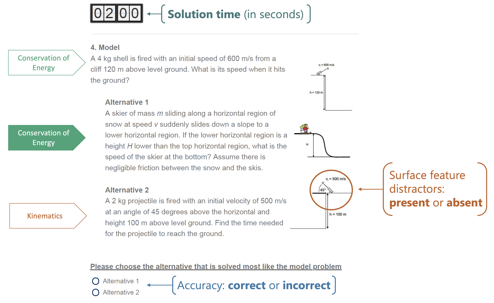
Note. Adapted from Hardiman et al. (1989) and Docktor et al. (2015). Five categorization task items were given as a part of a series of physics tasks during the baseline session of the experiment (before the intervention). There were two equivalent versions of the assessment (A and B). Four items included an incorrect response option that only superficially matched the model (distractors-present), and there was one item where surface features were unrelated to the model. Participants were given two minutes to solve each problem, but could not proceed without making a selection. When the timer was up, they would recieve a warning on their screen to make a selection before moving on. Therefore, it was possible to have a solution time longer than two minutes.
4. Hypotheses
H1: There will be a significant interaction between item type (distractors or not), solution time, and accuracy. Specifically, we expect that when distractors are present, increases in solution time will be associated with higher likelihood of solving the problem correctly
$Y_{Accuracy} = (*0 + b{ID,0,id} + b_{QUESTION,0,question}) + $ $*{Distractors} + _{Version} + $ \(\beta_{Semester} + \beta_{Week} + \beta_{Gender} + \epsilon\)
H2: Psychological threat, measured using self-report survey, will be negatively associated with time spent on the problem categorization task items when distractors are present.
$Y_{Time} = (*0 + b{ID,0,id} + b_{QUESTION,0,question}) + $ $*{Distractors} + _{Version} + $ \(\beta_{Semester} + \beta_{Week} + \beta_{Gender} + \epsilon\)
5. Data Organization
The raw data for the project were collected over the course of three semesters (Fall 2020, Spring 2021, and Fall 2021) using the Qualtrics survey delivery platform. Data for the current analyses were drawn from three separate baseline survey data files, one for each semester. The three files were nearly identical and only semester-specific response options (e.g., professor, class time) were different. The measures were all taken before the intervention (pre-random assignment). Self-report survey measures, physics assessment measures, and demographics were all collected in the same survey.
5.1 Data Cleansing and Tidying
Downloading data files
- Raw RDS files were downloaded using the
qualtRicspackage for R - These files were archived in a folder called ‘RDS’
Run self-defined functions for cleaning and tidying
The following functions were written to standardize and streamline basic cleaning steps for all surveys. The basic operations of the cleaning and scoring functions are described below.
- Read.Raw.File(survey, semester): This function takes a survey name and semester (e.g., “Baseline”, “Fall20”) and performs the following steps:
- Reads the raw RDS file
- Removes unnecessary variables (e.g., empty Qualtrics-generated variables)
- Adds the following metadata variables by referencing a master spreadsheet (not all of these will be used in the current analysis):
Timepoint: Experiment timepoint (Baseline)ID: Defined aboveCondition: Experimental conditionSemester(Cohort): Defined aboveWeek: Defined aboveWave: Week number (relative to the experiment that semester, e.g., Wave 1 = first round of students who participated in the study that semester)
- References a spreadsheet to recode variable values and rename variables
- Removes all observations that do not match the names in the study master list (e.g., pilot or testing observations)
- Removes all observations with survey progress less than 2% (false starts)
- Score.Physics(): This function takes the data frame generated from Read.Raw.File, collapses the two versions of the physics assessment (A and B), scores them based on the appropriate answer key, and then checks the total score against the one generated in Qualtrics (Qualtrics provides a total score, but not item-level accuracy).
Data auditing
- Duplicates (semantic violations):
- 2 participants (YR37 and 5253) had multiple observations (1 partial and 1 complete)
- Progress for incomplete responses were 5% and 29% respectively. One was due to a laptop running out of batteries, the other cause was unknown.
- The incomplete responses were removed and a note was added to their observations
- Missing values (coverage violations):
- 2 additional participants (7647 and CQ94) completed 92% and 91% of the survey and had missing values near the end (demographics).
- Responses were retained, gender identity was imputed from screening survey data, notes were added to their observations
Deidentify
- After running the cleaning and scoring functions and checking for anomalies, participant names were removed from the data.
5.2 Data Architecture
- The full baseline surveys for each semester were merged using bind_rows()
- The baseline data frame was then split by measure type (self-report surveys, physics assessment, and demographics), each containing a set of ID and metadata variables to join by.
Self-report survey measures and demographics
- A psychological threat score (
Psych.Threat.Diff) was calculated in the self-report survey dataframe by calculating a mean score for the resources and demands items separately, and then subtracting resources from demands such that greater scores indicate greater psychological threat. - Self-reported gender identity (
gender) was selected from the demographics dataframe
Physics assessment measures
- The physics assessment dataframe was pivoted long so that each item was a separate observation and each participant was represented across multiple rows
- Questions were filtered to contain only categorization task items (Part 2, questions 2:6)
- Factor variables were added for
Accuracy(based on Score) andDistractors
Resulting tidy-compliant table
library(tidyverse) |> suppressMessages()
Part2 <- readRDS("../../DSPN_FinalProject.rds") %>%
# Remove centered and z-scored time variables because they are not needed
select(-c(Time.z, Time.c))
Part2 %>% head | ID | Semester | Week | PhysAssessVersion | Question | Response | Score | Time | Distractors | Accuracy | Psych.Threat.Diff | Gender |
|---|---|---|---|---|---|---|---|---|---|---|---|
| <chr> | <fct> | <int> | <fct> | <fct> | <chr> | <dbl> | <dbl> | <fct> | <fct> | <dbl> | <chr> |
| AL15 | Fall20 | 11 | Version B | Question 2 | 2 | 0 | 76.853 | Present | Incorrect | -1.533333 | Male |
| AL15 | Fall20 | 11 | Version B | Question 3 | 2 | 1 | 85.451 | Absent | Correct | -1.533333 | Male |
| AL15 | Fall20 | 11 | Version B | Question 4 | 1 | 0 | 115.285 | Present | Incorrect | -1.533333 | Male |
| AL15 | Fall20 | 11 | Version B | Question 5 | 1 | 0 | 75.152 | Present | Incorrect | -1.533333 | Male |
| AL15 | Fall20 | 11 | Version B | Question 6 | 1 | 1 | 131.814 | Present | Correct | -1.533333 | Male |
| AF57 | Fall20 | 11 | Version A | Question 2 | 1 | 0 | 76.357 | Present | Incorrect | 2.600000 | Male |
6. Analysis
Data Analysis Steps: 1. Load packages and define variables 1. Description of continuous variables 1. Data visualization 1. Mixed effects models 1. Bayes factor estimation
6.1 Load Packages and Define Variables:
# Load Packages
library(lme4) |> suppressMessages()
library(sjPlot) |> suppressMessages()
library(sjmisc) |> suppressMessages()
library(sjlabelled) |> suppressMessages()
library(ggpubr) |> suppressMessages()
library(outliers) |> suppressMessages()
library(IRdisplay) |> suppressMessages()
library(moments) |> suppressMessages()
# Define Palettes
col_accuracy <- c("indianred", "cadetblue3")
col_distract <- c("azure4","darkorange")6.2 Description of Continuous Variables
First: Create summary table
# Test for outliers
############################
# This function takes a variable vector and a number of iterations (default = 20)
# and performs the grubbs test iteratively until the p value is greater than or equal to .05.
# It then returns the number of outliers detected
outlier.test <- function(var, R=20){
outliers <- as.numeric(c())
for(i in 1:R){
if(i == 1){dat = var} else{dat = out.rm}
grubbs <- grubbs.test(dat)
if(grubbs$p.value >= .05){
break
} else {
row.num <- which.max(dat)
value <- dat[row.num]
outliers <- append(outliers, value)
out.rm <- dat[-row.num]
}
}
return(outliers %>% length)
}
# Summary table of continuous variables
# Helper function for the table
summary.stats <- function(df){
df %>%
summarize(across(
everything(),
list(
min = min,
median = median,
mean = mean,
max = max,
skewness = skewness,
kurtosis = kurtosis,
# Shapiro-Wilk's test of normality
# If the test is significant, the distribution is non-normal
shapiro.p = ~ shapiro.test(.x)$p.value,
outliers = ~outlier.test(.x)
),
.names = "{.col}_{.fn}"
)) %>%
pivot_longer(
cols = everything(),
names_to = c("Variable", ".value"),
names_pattern = "(.*)_(.*)"
) %>%
mutate(across(min:shapiro.p, ~sprintf("%.2f",.x)))
}
# Because the table is set up at the observation level, I'm gathering each participants
# unique psychological threat score for the summary table. Otherwise each score would
# be repeated 5 times (once for each question answered by 1 participant)
threat <- Part2 %>% group_by(ID) %>%
summarise(Psych.Threat.Diff = unique(Psych.Threat.Diff))
bind_rows(
Part2 %>% select(Time) %>% summary.stats(),
threat %>% select(-ID) %>% summary.stats()
)| Variable | min | median | mean | max | skewness | kurtosis | shapiro.p | outliers |
|---|---|---|---|---|---|---|---|---|
| <chr> | <chr> | <chr> | <chr> | <chr> | <chr> | <chr> | <chr> | <int> |
| Time | 8.40 | 54.58 | 59.65 | 196.15 | 0.94 | 4.21 | 0.00 | 5 |
| Psych.Threat.Diff | -2.40 | 0.67 | 0.70 | 3.57 | 0.03 | 2.46 | 0.47 | 0 |
Note: Psychological threat appears to be normally distributed, but solution time returned a significant result with the Shapiro Wilk’s test and five outliers were detected.
Next: Visually inspect the distributions before making a decision about transformation.
options(repr.plot.width=9, repr.plot.height=7)
ggarrange(
ggdensity(
Part2$Time,
xlab = "Solution Time in Seconds",
title = "Density Distribution of Time",
fill = "lightgray"
),
ggdensity(
threat$Psych.Threat.Diff,
xlab = "Psychological Threat Score",
title = "Density Distribution of Psychological Threat",
fill = "lightgray"
),
ggqqplot(Part2$Time, title = "QQ Plot of Solution Time"),
ggqqplot(threat$Psych.Threat.Diff, title = "QQ Plot of Psychological Threat")
) 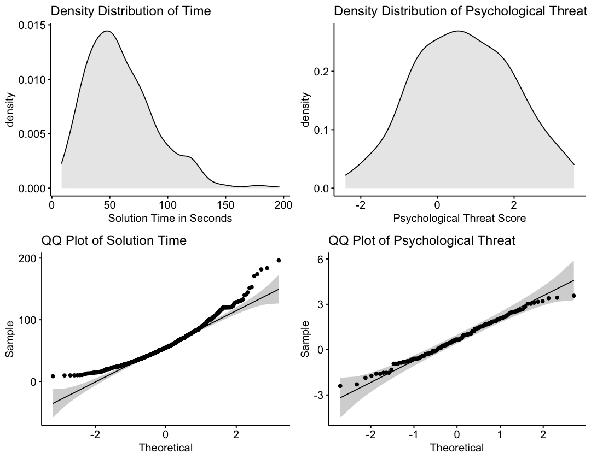
Note: In line with the summary statistics, psychological threat appears to be normally distributed. Alternatively, the solution time variable has a positive skew. This makes sense because solution times are bounded at the lower end, but not at the higher end.
Next: Because solution time is an outcome variable in the H2 model and normality is assumed, apply a log transformation and look at summary statistics again.
options(repr.plot.width=4, repr.plot.height=3)
Part2 %>%
mutate(
Time.log = log(Time),
# Centering the transformed solution time variable for moderation
Time.log.c = scale(Time.log, center = TRUE, scale = FALSE)
) -> Part2
# Get summary stats on the new variable
Part2 %>% select(Time.log) %>% summary.stats()
# Visualize the new distribution
ggdensity(
Part2$Time.log,
xlab = "Log Transformed Solution Time",
fill = "lightgray"
)| Variable | min | median | mean | max | skewness | kurtosis | shapiro.p | outliers |
|---|---|---|---|---|---|---|---|---|
| <chr> | <chr> | <chr> | <chr> | <chr> | <chr> | <chr> | <chr> | <int> |
| Time.log | 2.13 | 4.00 | 3.96 | 5.28 | -0.52 | 3.28 | 0.00 | 0 |
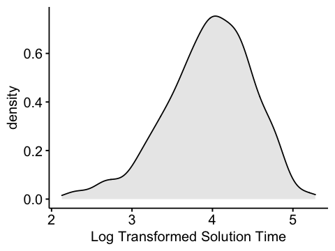
Note: The new variable now has a slight negative skew. However, the magnitude of the skewness is about 55% of what it was. Moreover, there are now no outlying observations which allows me to include all of the data.
6.3 Visualize Relations Between Key Study Variables
First: Look at accuracy by item and item type
options(repr.plot.width=11, repr.plot.height=7)
Part2 %>%
filter(Distractors == "Present") %>%
group_by(PhysAssessVersion) %>%
summarise(mean.accuracy = mean(Score)) -> hline
Part2 %>%
group_by(Question, PhysAssessVersion) %>%
summarise(.groups = "keep", Distractors = Distractors, Accuracy = mean(Score) %>% round(2)) %>%
ggbarplot(
x = "Question",
y = "Accuracy",
facet = "PhysAssessVersion",
add = "mean",
fill = "Distractors",
palette = col_distract,
size = .2,
alpha = .7,
ggtheme = theme_bw(base_size = 19),
xlab = FALSE,
title = "Figure 2. Accuracy by Question and Distractors\n",
legend = "right"
) +
rotate_x_text(angle = 45) +
scale_y_continuous(labels = scales::percent, limits = c(0, .8)) +
theme(panel.grid = element_blank(), title = element_text(face = "bold"), plot.title = element_text(hjust = .5)) +
geom_hline(data = hline, aes(yintercept = mean.accuracy), linetype = "dashed", color = "chocolate")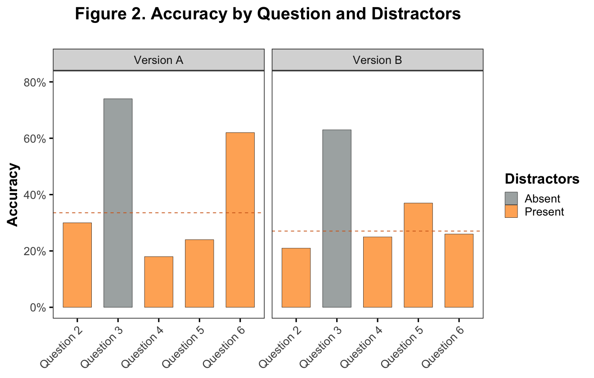
Note. It’s clear from this plot that, in line with prior work, there is an association between accuracy and surface feature distractors. It is also clear that there is one distractors-present question which seems to be an anomoly with respect to accuracy (Version A, Question 6).
Next: Plot accuracy and time by distractors at the item level
options(repr.plot.width=16, repr.plot.height=7)
ggdensity(
Part2,
"Time",
"..count..",
fill = "Accuracy",
color = "Accuracy",
alpha = .4,
size = 1,
add = "mean",
facet.by = c("PhysAssessVersion", "Question"),
palette = col_accuracy,
ggtheme = theme_bw(base_size = 19),
legend = "right"
) +
rotate_x_text(angle = 45) +
labs(
title = "Figure 3. Time by Accuracy and Question\n",
x = "Time in Seconds (log transformed scale)",
y = "Response Count"
) +
scale_x_continuous(trans = "log", breaks = c(10,20,40,80,160)) +
theme(panel.grid = element_blank(), title = element_text(face = "bold"), plot.title = element_text(hjust = .5))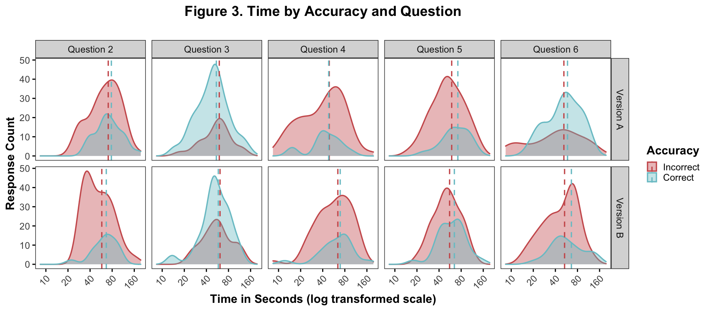
Note. This figure shows the response count (y-axis) of the incorrect (red) and correct (blue) responses across solution times (x-axis). The dotted lines represent the mean solution times for the incorrect and correct responses on a log transformed scale. As a reminder, question 3 in both test versions is the only distractors-absent question. As in the figure above, there’s a clear accuracy difference between the distractor/no-distractor questions. There is a smaller but noticable pattern of difference between the mean times. For 7/8 of the distractor questions (2, 4, 5, 6), the solution time for correct responses is greater than that for incorrect responses (exception = version A, question 4). Alternatively, on question 3, the solution time for the correct response is slightly faster.
Next: Plot time by accuracy and distractors across questions
options(repr.plot.width=10, repr.plot.height=7)
Part2 %>%
ggboxplot(
"Distractors",
"Time",
color = "Accuracy",
fill = "gray97",
size = .6,
palette = col_accuracy,
add = "jitter",
add.params = list(size = 1, alpha = .7),
legend = "right",
legend.title = "Accuracy",
xlab = "\nSurface Feature Distractors",
ylab = "Time in Seconds (log transformed scale)",
title = "Figure 4. Time by Accuracy and Surface Feature Distractors\n",
ggtheme = theme_minimal(base_size = 19),
) +
theme(
panel.grid.major.y = element_line(size = .2, color = "gray90"),
panel.grid.major.x = element_blank(),
axis.ticks = element_line(color = "gray70"),
title = element_text(face = "bold"),
plot.title = element_text(hjust = .5)) +
scale_y_continuous(trans = "log", limits = c(7, 200), breaks = c(12, 25, 50, 100, 200))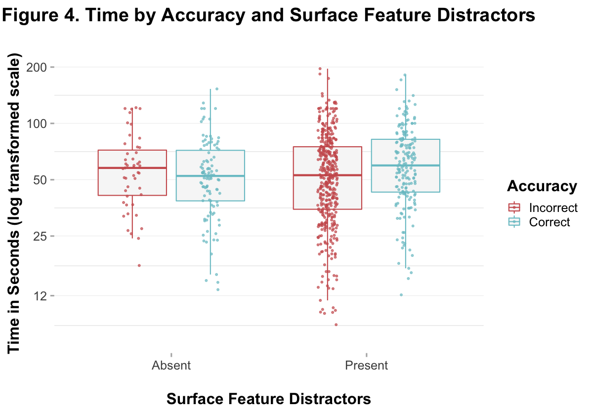
Note. In this figure, responses are collapsed across questions. You can see that there were more responses for distractors-present items (because there were more questions), and there were more incorrect responses for distractors-present items and more correct responses for distractors-absent items. An overall difference between the means is visible for both distractors-present and -absent items.
Next: Look at time by distractors and self-reported psychological threat
options(repr.plot.width=10, repr.plot.height=7)
Part2 %>%
group_by(ID, Distractors) %>%
summarise(
Psych.Threat = mean(Psych.Threat.Diff),
Time = mean(Time), .groups = "keep"
) %>%
ggscatter(
"Psych.Threat",
"Time",
color = "Distractors",
size = 2,
palette = col_distract,
alpha = .7,
ggtheme = theme_minimal(base_size = 19),
title = "Figure 5. Time by Distractors and Psychological Threat\n",
ylab = "Time in Seconds (log transformed scale)",
xlab = "Psychological Threat",
legend = "right"
) +
scale_y_continuous(trans = "log", breaks = c(10, 20, 40, 80, 160)) +
scale_x_continuous(breaks = seq(-3, 4, by = 1)) +
geom_smooth(
aes(color = Distractors), method = "lm", formula = 'y~x', size = 1, se = FALSE) +
theme(panel.grid.major = element_line(size = .2),
title = element_text(face = "bold"), plot.title = element_text(hjust = .5))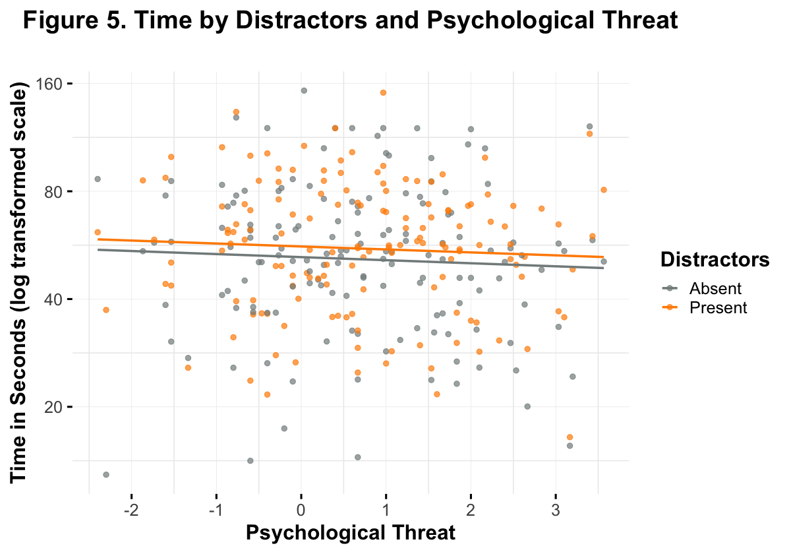
Note. This figure represents the relationship described by hypothesis 2. It appears unlikely that there is any association between psychological threat, distractors, and solution time.
6.4 Mixed Effects Models
Hypothesis 1
H1: There will be a significant interaction between item type (distractors or not), solution time, and accuracy. Specifically, we expect that when distractors are present, increases in solution time will be associated with higher likelihood of solving the problem correctly
\(Y_{Accuracy} = (\beta_0 + {b_{ID,0}}_{id} + {b_{QUESTION,0}}_{question}) + \beta_{Distractors} * \beta_{Time} + \beta_{Version} + \beta_{Semester} + \beta_{Week} + \beta_{Gender} + \epsilon\)
fit.h1.fun <- function(data){
glmer(
Accuracy ~
Distractors*Time.log.c +
(1|ID) +
(1|Question) +
PhysAssessVersion +
Semester +
Week +
Gender,
data = data,
family = "binomial",
glmerControl(optimizer = "bobyqa")
) %>% return
}
h1.fit <- fit.h1.fun(Part2)
tab_model(
h1.fit,
title = "Table 1. Results of Logististic Mixed Effects Model Testing Hypothesis 1",
CSS = list(css.firsttablecol = 'width: 200px'),
file = "h1_summary.html"
)
display_html(file="h1_summary.html")| Accuracy | |
|---|---|
| Predictors | Odds Ratios |
| (Intercept) | 2.98 |
| Distractors [Present] | 0.18 |
| Time log c | 0.69 |
| PhysAssessVersion [Version B] |
0.68 |
| Semester [Fall21] | 0.77 |
| Semester [Spring21] | 0.72 |
| Week | 1.00 |
| Gender [Male] | 1.09 |
| Distractors [Present] * Time log c |
2.55 |
| Random Effects | |
| σ2 | 3.29 |
| τ00 ID | 0.12 |
| τ00 Question | 0.12 |
| ICC | 0.07 |
| N ID | 149 |
| N Question | 5 |
| Observations | 745 |
| Marginal R2 / Conditional R2 | 0.150 / 0.208 |
H1 Results
- There is a significant main effect of distractors on accuracy
- There is a main effect of test version, as could be seen in the visualizations above (Version A, Question 6)
- There is a significant interaction between surface feature distractors and solution time on accuracy
Next: Calculate the prediction accuracy of the model, visualize the interaction with model predictions, and do a simple slopes analysis.
h1.df <- Part2 %>%
mutate(
prob_correct = predict(h1.fit, type = "response"),
pred_score = if_else(prob_correct > .5, 1, 0)
)
library(caret) |> suppressMessages()
cm <- h1.df %>%
transmute(
Actual = Accuracy,
Predicted = if_else(pred_score == 1, "Correct", "Incorrect") %>%
factor(levels = c("Incorrect", "Correct"))
)
fourfoldplot(table(cm))
prediction.acc <- mean(h1.df$Score == h1.df$pred_score) %>% round(4)
paste0("The prediction accuracy of the H1 model is ", (prediction.acc *100), "%") %>% print
options(repr.plot.width=15, repr.plot.height=7)
p1 <- plot_model(
h1.fit,
type = "pred",
terms = c("Time.log.c[all]", "Distractors"),
show.values = TRUE,
colors = col_distract
) +
theme_minimal(base_size = 19) +
labs(x = "Centered Log of the Solution Time",
title = "Interaction Plot Using sjPlot",
y = "Predicted Probability of Answering Correctly") +
theme(plot.title = element_text(face = "bold", hjust = .5))
p2 <- h1.df %>%
ggscatter(
"Time",
"prob_correct",
color = "Distractors",
alpha = .7,
palette = col_distract,
ggtheme = theme_minimal(base_size=19),
title = "Predicted Points Using predict()",
ylab = "Predicted Probability of Answering Correctly",
xlab = "Solution Time in Seconds (log transformed scale)"
) +
theme(plot.title = element_text(face = "bold", hjust = .5)) +
scale_x_continuous(trans = "log", breaks = c(12, 25, 50, 100, 200)) +
scale_y_continuous(limits = c(0,1), breaks = c(.25, .5, .75, 1), labels = scales::percent)
ggarrange(p1, p2, common.legend = TRUE)[1] "The prediction accuracy of the H1 model is 71.41%"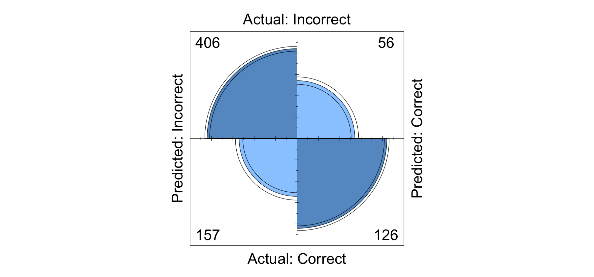
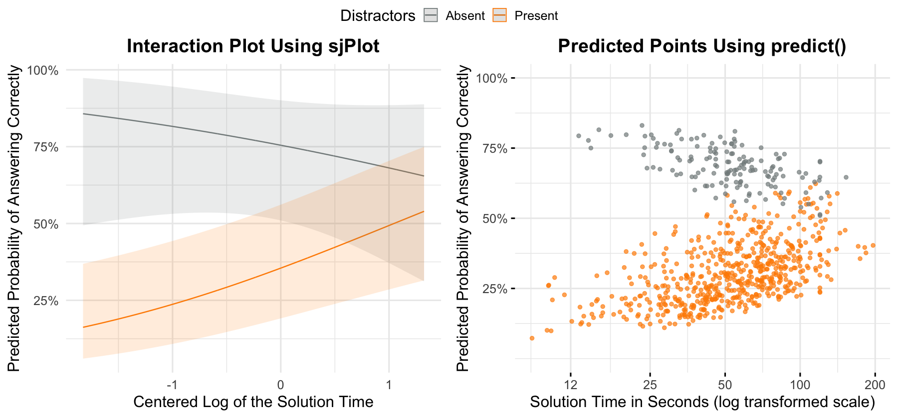
library(interactions)
sim_slopes(h1.fit, pred = Time.log.c, modx = Distractors, johnson_neyman = FALSE) [1m[4mSIMPLE SLOPES ANALYSIS[24m[22m
[3mSlope of Time.log.c when Distractors = Present:
[23m Est. S.E. z val. p
------ ------ -------- ------
0.57 0.18 3.14 0.00
[3mSlope of Time.log.c when Distractors = Absent:
[23m Est. S.E. z val. p
------- ------ -------- ------
-0.37 0.39 -0.94 0.35Note. The prediction accuracy of the model on the training data is about 71%. As you can see from the visualizations and the simple slopes analysis, when distractors are present the probability of answering correctly increases significantly with time spent. Alternatively, the probability of answering correctly decreases slightly (although not significantly) when distractors are absent.
Next: Fit the model for hypothesis 2
Hypothesis 2
H2: Psychological threat, measured using self-report survey, will be negatively associated with time spent on the problem categorization task items when distractors are present.
\(Y_{Time} = (\beta_0 + {b_{ID,0}}_{id} + {b_{QUESTION,0}}_{question}) + \beta_{Distractors} * \beta_{Psych.Threat.Diff} + \beta_{Version} + \beta_{Semester} + \beta_{Week} + \beta_{Gender} + \epsilon\)
fit.h2.fun <- function(data){
lmer(
Time.log.c ~
Distractors*Psych.Threat.Diff +
(1|ID) +
(1|Question) +
Semester +
PhysAssessVersion +
Week +
Gender,
data = data
) %>% return()
}
h2.fit <- fit.h2.fun(Part2)
tab_model(
h2.fit,
title = "Table 2. Results of Linear Mixed Effects Model Testing Hypothesis 2",
CSS = list(css.firsttablecol = 'width: 200px'),
file = "h2_summary.html"
)
display_html(file="h2_summary.html")| Time.log.c | |
|---|---|
| Predictors | Estimates |
| (Intercept) | 0.53 |
| Distractors [Present] | 0.01 |
| Psych Threat Diff | -0.01 |
| Semester [Fall21] | -0.25 |
| Semester [Spring21] | -0.39 |
| PhysAssessVersion [Version B] |
0.05 |
| Week | -0.04 |
| Gender [Male] | -0.00 |
| Distractors [Present] * Psych Threat Diff |
-0.00 |
| Random Effects | |
| σ2 | 0.13 |
| τ00 ID | 0.16 |
| τ00 Question | 0.01 |
| ICC | 0.58 |
| N ID | 149 |
| N Question | 5 |
| Observations | 745 |
| Marginal R2 / Conditional R2 | 0.019 / 0.584 |
H2 Results
- In line with Figure 5 above, there were no main effects of distractors or pychological threat on solution time and no interaction between psychological threat and distractors on solution time.
6.5 Bayes Factor Estimation
Hypothesis 1
H1: There will be a significant interaction between item type (distractors or not), solution time, and accuracy. Specifically, we expect that when distractors are present, increases in solution time will be associated with higher likelihood of solving the problem correctly
I calculated a bayes factor to quantify the evidence in favor of the full model (with the interaction term) over the null model (without the interaction) using the brms package because the BayesFactor package can only handle linear mixed effects models. This analysis was informed by a tutorial written by Jonas Kristoffer Lindeløv.
First: Fit the models using brms
library(brms) |> suppressMessages()
full_brms <- brm(
Accuracy ~
Distractors*Time.log.c +
(1|ID) +
(1|Question) +
PhysAssessVersion +
Semester +
Week +
Gender,
data = Part2,
iter = 10000,
chains = 4,
seed = 123,
family = bernoulli(link = "logit"),
save_pars = save_pars(all = TRUE),
control = list(adapt_delta = .99)
)
null_brms <- update(full_brms, formula = ~.-Distractors:Time.log.c)Compiling Stan program...
recompiling to avoid crashing R session
Start sampling
SAMPLING FOR MODEL 'b0deb918f33676f323a2956cbb109561' NOW (CHAIN 1).
Chain 1:
Chain 1: Gradient evaluation took 9.4e-05 seconds
Chain 1: 1000 transitions using 10 leapfrog steps per transition would take 0.94 seconds.
Chain 1: Adjust your expectations accordingly!
Chain 1:
Chain 1:
Chain 1: Iteration: 1 / 10000 [ 0%] (Warmup)
Chain 1: Iteration: 1000 / 10000 [ 10%] (Warmup)
Chain 1: Iteration: 2000 / 10000 [ 20%] (Warmup)
Chain 1: Iteration: 3000 / 10000 [ 30%] (Warmup)
Chain 1: Iteration: 4000 / 10000 [ 40%] (Warmup)
Chain 1: Iteration: 5000 / 10000 [ 50%] (Warmup)
Chain 1: Iteration: 5001 / 10000 [ 50%] (Sampling)
Chain 1: Iteration: 6000 / 10000 [ 60%] (Sampling)
Chain 1: Iteration: 7000 / 10000 [ 70%] (Sampling)
Chain 1: Iteration: 8000 / 10000 [ 80%] (Sampling)
Chain 1: Iteration: 9000 / 10000 [ 90%] (Sampling)
Chain 1: Iteration: 10000 / 10000 [100%] (Sampling)
Chain 1:
Chain 1: Elapsed Time: 26.7945 seconds (Warm-up)
Chain 1: 26.542 seconds (Sampling)
Chain 1: 53.3365 seconds (Total)
Chain 1:
SAMPLING FOR MODEL 'b0deb918f33676f323a2956cbb109561' NOW (CHAIN 2).
Chain 2:
Chain 2: Gradient evaluation took 5e-05 seconds
Chain 2: 1000 transitions using 10 leapfrog steps per transition would take 0.5 seconds.
Chain 2: Adjust your expectations accordingly!
Chain 2:
Chain 2:
Chain 2: Iteration: 1 / 10000 [ 0%] (Warmup)
Chain 2: Iteration: 1000 / 10000 [ 10%] (Warmup)
Chain 2: Iteration: 2000 / 10000 [ 20%] (Warmup)
Chain 2: Iteration: 3000 / 10000 [ 30%] (Warmup)
Chain 2: Iteration: 4000 / 10000 [ 40%] (Warmup)
Chain 2: Iteration: 5000 / 10000 [ 50%] (Warmup)
Chain 2: Iteration: 5001 / 10000 [ 50%] (Sampling)
Chain 2: Iteration: 6000 / 10000 [ 60%] (Sampling)
Chain 2: Iteration: 7000 / 10000 [ 70%] (Sampling)
Chain 2: Iteration: 8000 / 10000 [ 80%] (Sampling)
Chain 2: Iteration: 9000 / 10000 [ 90%] (Sampling)
Chain 2: Iteration: 10000 / 10000 [100%] (Sampling)
Chain 2:
Chain 2: Elapsed Time: 25.7026 seconds (Warm-up)
Chain 2: 27.6264 seconds (Sampling)
Chain 2: 53.3291 seconds (Total)
Chain 2:
SAMPLING FOR MODEL 'b0deb918f33676f323a2956cbb109561' NOW (CHAIN 3).
Chain 3:
Chain 3: Gradient evaluation took 5.4e-05 seconds
Chain 3: 1000 transitions using 10 leapfrog steps per transition would take 0.54 seconds.
Chain 3: Adjust your expectations accordingly!
Chain 3:
Chain 3:
Chain 3: Iteration: 1 / 10000 [ 0%] (Warmup)
Chain 3: Iteration: 1000 / 10000 [ 10%] (Warmup)
Chain 3: Iteration: 2000 / 10000 [ 20%] (Warmup)
Chain 3: Iteration: 3000 / 10000 [ 30%] (Warmup)
Chain 3: Iteration: 4000 / 10000 [ 40%] (Warmup)
Chain 3: Iteration: 5000 / 10000 [ 50%] (Warmup)
Chain 3: Iteration: 5001 / 10000 [ 50%] (Sampling)
Chain 3: Iteration: 6000 / 10000 [ 60%] (Sampling)
Chain 3: Iteration: 7000 / 10000 [ 70%] (Sampling)
Chain 3: Iteration: 8000 / 10000 [ 80%] (Sampling)
Chain 3: Iteration: 9000 / 10000 [ 90%] (Sampling)
Chain 3: Iteration: 10000 / 10000 [100%] (Sampling)
Chain 3:
Chain 3: Elapsed Time: 25.7891 seconds (Warm-up)
Chain 3: 28.3744 seconds (Sampling)
Chain 3: 54.1635 seconds (Total)
Chain 3:
SAMPLING FOR MODEL 'b0deb918f33676f323a2956cbb109561' NOW (CHAIN 4).
Chain 4:
Chain 4: Gradient evaluation took 5.6e-05 seconds
Chain 4: 1000 transitions using 10 leapfrog steps per transition would take 0.56 seconds.
Chain 4: Adjust your expectations accordingly!
Chain 4:
Chain 4:
Chain 4: Iteration: 1 / 10000 [ 0%] (Warmup)
Chain 4: Iteration: 1000 / 10000 [ 10%] (Warmup)
Chain 4: Iteration: 2000 / 10000 [ 20%] (Warmup)
Chain 4: Iteration: 3000 / 10000 [ 30%] (Warmup)
Chain 4: Iteration: 4000 / 10000 [ 40%] (Warmup)
Chain 4: Iteration: 5000 / 10000 [ 50%] (Warmup)
Chain 4: Iteration: 5001 / 10000 [ 50%] (Sampling)
Chain 4: Iteration: 6000 / 10000 [ 60%] (Sampling)
Chain 4: Iteration: 7000 / 10000 [ 70%] (Sampling)
Chain 4: Iteration: 8000 / 10000 [ 80%] (Sampling)
Chain 4: Iteration: 9000 / 10000 [ 90%] (Sampling)
Chain 4: Iteration: 10000 / 10000 [100%] (Sampling)
Chain 4:
Chain 4: Elapsed Time: 25.8614 seconds (Warm-up)
Chain 4: 28.3992 seconds (Sampling)
Chain 4: 54.2605 seconds (Total)
Chain 4:
Start sampling
SAMPLING FOR MODEL 'b0deb918f33676f323a2956cbb109561' NOW (CHAIN 1).
Chain 1:
Chain 1: Gradient evaluation took 6.1e-05 seconds
Chain 1: 1000 transitions using 10 leapfrog steps per transition would take 0.61 seconds.
Chain 1: Adjust your expectations accordingly!
Chain 1:
Chain 1:
Chain 1: Iteration: 1 / 10000 [ 0%] (Warmup)
Chain 1: Iteration: 1000 / 10000 [ 10%] (Warmup)
Chain 1: Iteration: 2000 / 10000 [ 20%] (Warmup)
Chain 1: Iteration: 3000 / 10000 [ 30%] (Warmup)
Chain 1: Iteration: 4000 / 10000 [ 40%] (Warmup)
Chain 1: Iteration: 5000 / 10000 [ 50%] (Warmup)
Chain 1: Iteration: 5001 / 10000 [ 50%] (Sampling)
Chain 1: Iteration: 6000 / 10000 [ 60%] (Sampling)
Chain 1: Iteration: 7000 / 10000 [ 70%] (Sampling)
Chain 1: Iteration: 8000 / 10000 [ 80%] (Sampling)
Chain 1: Iteration: 9000 / 10000 [ 90%] (Sampling)
Chain 1: Iteration: 10000 / 10000 [100%] (Sampling)
Chain 1:
Chain 1: Elapsed Time: 24.8325 seconds (Warm-up)
Chain 1: 14.6516 seconds (Sampling)
Chain 1: 39.4841 seconds (Total)
Chain 1:
SAMPLING FOR MODEL 'b0deb918f33676f323a2956cbb109561' NOW (CHAIN 2).
Chain 2:
Chain 2: Gradient evaluation took 5.9e-05 seconds
Chain 2: 1000 transitions using 10 leapfrog steps per transition would take 0.59 seconds.
Chain 2: Adjust your expectations accordingly!
Chain 2:
Chain 2:
Chain 2: Iteration: 1 / 10000 [ 0%] (Warmup)
Chain 2: Iteration: 1000 / 10000 [ 10%] (Warmup)
Chain 2: Iteration: 2000 / 10000 [ 20%] (Warmup)
Chain 2: Iteration: 3000 / 10000 [ 30%] (Warmup)
Chain 2: Iteration: 4000 / 10000 [ 40%] (Warmup)
Chain 2: Iteration: 5000 / 10000 [ 50%] (Warmup)
Chain 2: Iteration: 5001 / 10000 [ 50%] (Sampling)
Chain 2: Iteration: 6000 / 10000 [ 60%] (Sampling)
Chain 2: Iteration: 7000 / 10000 [ 70%] (Sampling)
Chain 2: Iteration: 8000 / 10000 [ 80%] (Sampling)
Chain 2: Iteration: 9000 / 10000 [ 90%] (Sampling)
Chain 2: Iteration: 10000 / 10000 [100%] (Sampling)
Chain 2:
Chain 2: Elapsed Time: 28.9034 seconds (Warm-up)
Chain 2: 57.1974 seconds (Sampling)
Chain 2: 86.1009 seconds (Total)
Chain 2:
SAMPLING FOR MODEL 'b0deb918f33676f323a2956cbb109561' NOW (CHAIN 3).
Chain 3:
Chain 3: Gradient evaluation took 5.7e-05 seconds
Chain 3: 1000 transitions using 10 leapfrog steps per transition would take 0.57 seconds.
Chain 3: Adjust your expectations accordingly!
Chain 3:
Chain 3:
Chain 3: Iteration: 1 / 10000 [ 0%] (Warmup)
Chain 3: Iteration: 1000 / 10000 [ 10%] (Warmup)
Chain 3: Iteration: 2000 / 10000 [ 20%] (Warmup)
Chain 3: Iteration: 3000 / 10000 [ 30%] (Warmup)
Chain 3: Iteration: 4000 / 10000 [ 40%] (Warmup)
Chain 3: Iteration: 5000 / 10000 [ 50%] (Warmup)
Chain 3: Iteration: 5001 / 10000 [ 50%] (Sampling)
Chain 3: Iteration: 6000 / 10000 [ 60%] (Sampling)
Chain 3: Iteration: 7000 / 10000 [ 70%] (Sampling)
Chain 3: Iteration: 8000 / 10000 [ 80%] (Sampling)
Chain 3: Iteration: 9000 / 10000 [ 90%] (Sampling)
Chain 3: Iteration: 10000 / 10000 [100%] (Sampling)
Chain 3:
Chain 3: Elapsed Time: 27.3007 seconds (Warm-up)
Chain 3: 29.0078 seconds (Sampling)
Chain 3: 56.3085 seconds (Total)
Chain 3:
SAMPLING FOR MODEL 'b0deb918f33676f323a2956cbb109561' NOW (CHAIN 4).
Chain 4:
Chain 4: Gradient evaluation took 5.7e-05 seconds
Chain 4: 1000 transitions using 10 leapfrog steps per transition would take 0.57 seconds.
Chain 4: Adjust your expectations accordingly!
Chain 4:
Chain 4:
Chain 4: Iteration: 1 / 10000 [ 0%] (Warmup)
Chain 4: Iteration: 1000 / 10000 [ 10%] (Warmup)
Chain 4: Iteration: 2000 / 10000 [ 20%] (Warmup)
Chain 4: Iteration: 3000 / 10000 [ 30%] (Warmup)
Chain 4: Iteration: 4000 / 10000 [ 40%] (Warmup)
Chain 4: Iteration: 5000 / 10000 [ 50%] (Warmup)
Chain 4: Iteration: 5001 / 10000 [ 50%] (Sampling)
Chain 4: Iteration: 6000 / 10000 [ 60%] (Sampling)
Chain 4: Iteration: 7000 / 10000 [ 70%] (Sampling)
Chain 4: Iteration: 8000 / 10000 [ 80%] (Sampling)
Chain 4: Iteration: 9000 / 10000 [ 90%] (Sampling)
Chain 4: Iteration: 10000 / 10000 [100%] (Sampling)
Chain 4:
Chain 4: Elapsed Time: 26.7232 seconds (Warm-up)
Chain 4: 28.6709 seconds (Sampling)
Chain 4: 55.3942 seconds (Total)
Chain 4: # Bayesian model summaries
full_brms %>% summary
null_brms %>% summary Family: bernoulli
Links: mu = logit
Formula: Accuracy ~ Distractors * Time.log.c + (1 | ID) + (1 | Question) + PhysAssessVersion + Semester + Week + Gender
Data: Part2 (Number of observations: 745)
Draws: 4 chains, each with iter = 10000; warmup = 5000; thin = 1;
total post-warmup draws = 20000
Group-Level Effects:
~ID (Number of levels: 149)
Estimate Est.Error l-95% CI u-95% CI Rhat Bulk_ESS Tail_ESS
sd(Intercept) 0.45 0.20 0.05 0.81 1.00 4050 5794
~Question (Number of levels: 5)
Estimate Est.Error l-95% CI u-95% CI Rhat Bulk_ESS Tail_ESS
sd(Intercept) 0.83 0.56 0.26 2.31 1.00 6484 9148
Population-Level Effects:
Estimate Est.Error l-95% CI u-95% CI Rhat
Intercept 1.15 1.48 -1.76 4.07 1.00
DistractorsPresent -1.79 1.13 -4.11 0.52 1.00
Time.log.c -0.38 0.41 -1.19 0.41 1.00
PhysAssessVersionVersionB -0.40 0.19 -0.78 -0.04 1.00
SemesterFall21 -0.27 0.49 -1.25 0.69 1.00
SemesterSpring21 -0.34 0.57 -1.47 0.76 1.00
Week 0.00 0.09 -0.17 0.18 1.00
GenderMale 0.09 0.20 -0.29 0.48 1.00
DistractorsPresent:Time.log.c 0.98 0.44 0.14 1.86 1.00
Bulk_ESS Tail_ESS
Intercept 12756 10319
DistractorsPresent 12427 8630
Time.log.c 23847 14661
PhysAssessVersionVersionB 31025 15419
SemesterFall21 14404 14474
SemesterSpring21 15062 14050
Week 14302 13945
GenderMale 28176 14782
DistractorsPresent:Time.log.c 24123 15318
Draws were sampled using sampling(NUTS). For each parameter, Bulk_ESS
and Tail_ESS are effective sample size measures, and Rhat is the potential
scale reduction factor on split chains (at convergence, Rhat = 1).
Family: bernoulli
Links: mu = logit
Formula: Accuracy ~ Distractors + Time.log.c + (1 | ID) + (1 | Question) + PhysAssessVersion + Semester + Week + Gender
Data: Part2 (Number of observations: 745)
Draws: 4 chains, each with iter = 10000; warmup = 5000; thin = 1;
total post-warmup draws = 20000
Group-Level Effects:
~ID (Number of levels: 149)
Estimate Est.Error l-95% CI u-95% CI Rhat Bulk_ESS Tail_ESS
sd(Intercept) 0.45 0.19 0.05 0.81 1.00 3454 4164
~Question (Number of levels: 5)
Estimate Est.Error l-95% CI u-95% CI Rhat Bulk_ESS Tail_ESS
sd(Intercept) 0.82 0.55 0.25 2.28 1.00 5529 7504
Population-Level Effects:
Estimate Est.Error l-95% CI u-95% CI Rhat Bulk_ESS
Intercept 1.05 1.47 -1.81 3.90 1.00 10430
DistractorsPresent -1.79 1.11 -4.04 0.46 1.00 9976
Time.log.c 0.43 0.17 0.10 0.77 1.00 30492
PhysAssessVersionVersionB -0.41 0.19 -0.78 -0.05 1.00 28438
SemesterFall21 -0.23 0.49 -1.19 0.72 1.00 11968
SemesterSpring21 -0.31 0.56 -1.40 0.80 1.00 12498
Week 0.01 0.09 -0.16 0.18 1.00 11834
GenderMale 0.11 0.19 -0.27 0.49 1.00 25693
Tail_ESS
Intercept 10270
DistractorsPresent 8438
Time.log.c 15397
PhysAssessVersionVersionB 15749
SemesterFall21 13665
SemesterSpring21 13772
Week 13733
GenderMale 16261
Draws were sampled using sampling(NUTS). For each parameter, Bulk_ESS
and Tail_ESS are effective sample size measures, and Rhat is the potential
scale reduction factor on split chains (at convergence, Rhat = 1).Next: Calculate Bayes factor
Note. I calculated the bayes factor in favor of the interaction against the null model with brms::bayes_factor, which uses a bridge sampling algorithm. Because the calculation produces slightly different results each time it is run, it is recommended that the function is called multiple times to ensure the stability of the results. Therefore, ran the calculation 100 times and plotted the distribution of bayes factor results.
get.bf.values <- function(R, model1, model2) {
values <- rep(NA, R)
for (i in 1:R) {
this.bf <- bayes_factor(model1, model2, silent = TRUE) # The output was insanely long so I silenced it
values[i] <- this.bf$bf
}
values %>% return
}
bf_values <- get.bf.values(100, full_brms, null_brms)bf_ci <- bf_values %>% quantile(probs = c(.025, .975)) %>% round(2)
bf_mean <- bf_values %>% mean%>% round(2)
options(repr.plot.width=7, repr.plot.height=5)
gghistogram(
bf_values,
bins = 11,
fill = "lightgray",
ggtheme = theme_bw(base_size = 15),
xlab = "Estimated Bayes factors in favor of full_brms over null_brms",
ylab = "Count",
title = "Estimated Bayes Factors with Mean and 95% CI"
) +
geom_vline(xintercept = bf_ci, linetype = "dashed") +
geom_vline(xintercept = bf_mean, linetype = "dashed", color = "red") +
scale_x_continuous(breaks = seq(13, 16, by = .5))
library(effectsize)
# Interpret Bayes factor
paste0(
"The mean Bayes factor estimate was ",
bf_mean,
", 95% CI[",
bf_ci[1],
", ",
bf_ci[2],
"]. This indicates ",
interpret_bf(bf_mean),
" the full model."
)‘The mean Bayes factor estimate was 14.57, 95% CI[13.56, 15.66]. This indicates strong evidence in favour of the full model.’
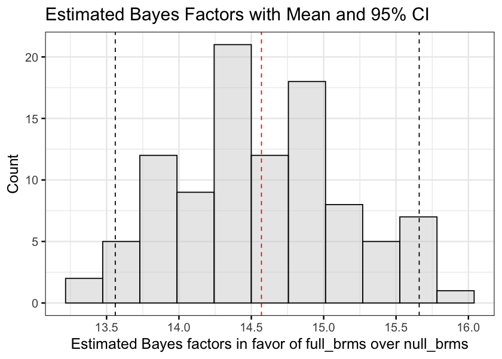
Bayes Factor Estimation Results for H1
- The Bayes factor estimates using bridge sampling were stable, with 95% of the values falling roughly between 13.6 and 15.7. This indicates strong evidence in favor of the interaction model compared to the null (Jeffreys, 1961).
Hypothesis 2
H2: Psychological threat, measured using self-report survey, will be negatively associated with time spent on the problem categorization task items when distractors are present.
Note: Because I found no significant results with my H2 model, I wanted to look at the evidence in favor of the full model relative to the evidence in favor of the intercept-only model (mean solution time as the only predictor) as well as the no-interaction model. Because H2 was tested with a mixed linear model, I used the BayesFactor package.
Next: Fit the full model (with interaction) and the null model (no interaction) and plot them against the intercept-only model. Then compare the full and the null model against each other and interpret the results.
library(BayesFactor) |> suppressMessages()
# BayesFactor wants the random variables as factors
# and data as data frame and not tibble
Part2.1 <- Part2 %>%
mutate(across(c(ID, Question), factor)) %>%
as.data.frame()
h2.bf.full <- lmBF(
Time.log.c ~
Distractors +
Psych.Threat.Diff +
Distractors*Psych.Threat.Diff +
Semester +
PhysAssessVersion +
Week +
Gender +
ID +
Question,
data = Part2.1,
whichRandom = c('ID', 'Question')
)
h2.bf.null <- lmBF(
Time.log.c ~
Distractors +
Psych.Threat.Diff +
Semester +
PhysAssessVersion +
Week +
Gender +
ID +
Question,
data = Part2.1,
whichRandom = c('ID', 'Question')
)
h2.bf.all <- c(h2.bf.full, h2.bf.null)
options(repr.plot.width=15, repr.plot.height=5)
plot(h2.bf.all)
compare_bf <- h2.bf.full/h2.bf.null
compare_bfBayes factor analysis
--------------
[1] Distractors + Psych.Threat.Diff + Distractors * Psych.Threat.Diff + Semester + PhysAssessVersion + Week + Gender + ID + Question : 0.1426753 ±4.45%
Against denominator:
Time.log.c ~ Distractors + Psych.Threat.Diff + Semester + PhysAssessVersion + Week + Gender + ID + Question
---
Bayes factor type: BFlinearModel, JZS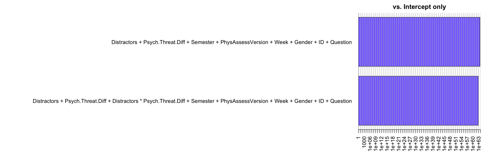
# Interpret Bayes factor
compare_bf %>% as.vector %>% as.numeric %>% interpret_bf %>%
paste(., "the full model compared to the no-interaction model")‘moderate evidence against the full model compared to the no-interaction model’
Bayes Factor Estimation Results for H2
- There was extreme evidence for the full (interaction) and the null (no interaction) compared to the intercept-only model, but there was only a moderate difference between them, with the null model doing slightly better than the full model.
- This makes sense with respect to the marginal and conditional \(R^2\) values reported in the model results. The marginal \(R^2\) represents the variablility explained by the fixed effects and the conditional \(R^2\) represents the variability explained by the random effects. As a reminder, these were the results for the H2 linear mixed model: marginal \(R^2\) = 0.019, conditional \(R^2\) = .584. This means that the random intercepts (participant means and question means) do a great job at predicting solution time, but the fixed effects do not add much above and beyond that. Because the models both include the random effect of
ID(individual differences between participants), they are much better than the intercept (grand mean) at predicting solution time, but there is little difference between them.
7. Conclusions
In the current study we tested two hypotheses in a sample of undergraduate physics students reporting psychological threat. Solution time and accuracy were measured during a problem categorization task in which items varied on whether there were surface feature distractors present in the incorrect response option. First, we tested whether there was an interaction between solution time and distractors on accuracy. In line with prior work (e.g., Hardiman et al., 1989), we found that surface feature distractors reduced the likelihood of answering correctly. We also found evidence in favor of an interaction between distractors and solution time. When distractors were present, the probability of answering correctly increased with time. There was no relationship between time and accuracy when distractors were absent. Next, we tested whether there was an interaction between psychological threat and surface feature distractors on solution time. We had predicted that more threatened students would be oriented toward avoidance and thus be more likely to answer quickly when a superficially similar response was available. We found no evidence supporting either the main effects of, or interaction between psychological threat and distractors on solution time. The model as a whole was much better at predicting solution time compared to the mean, but this was due to unexplained individual differences between participants and questions.
This study has some important limitations. There were only five items on the categorization task which were unbalanced with regard to item type (distractors vs. no distractors). Future work should test this hypothesis with more total items and an equal number of distractor and no-distractor items. Additionally, solution times were measured online using Qualtrics, which is not intended to provide precise reaction time data, and our analysis revealed that the test versions were not completely equivalent as intended. Another limitation of this study is that our sample was selected based on initial psychological threat scores greater than zero during the screening survey, and therefore it is unknown whether results will generalize to a broader population of physics students. Selection bias may also explain why there was no effect of psychological threat found in the test of hypothesis 2.
We build on prior work by showing evidence that the availability of a superficially similar response option is associated with solution time as well as accuracy when categorizing physics problems. The greater accuracy on distractors-absent items suggests that novice categorization decisions are not entirely explained by a lack of knowledge or exclusive reliance on surface features. Rather, the problem may be that novices are less likely to recognize and inhibit heuristic responses, and that inhibiting these respoonses takes time. Understanding this process can help inform physics instruction.